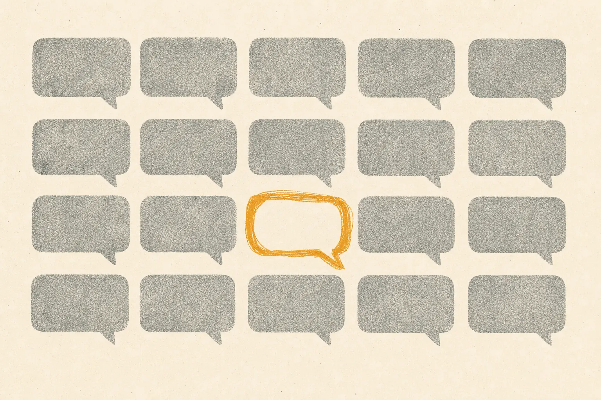

Why AI content all sounds the same, and how to escape it

AI content sounds the same because most teams give models the same thing: vague tone adjectives, trend formats and no audience evidence. The model fills the gaps with its most probable defaults. To escape sameness, change the inputs: a codified voice, curated examples, and the specific language and tensions your audience actually uses, gathered from real conversations.
What does AI sameness look like?
You know it when you scroll. Posts that open with a rhetorical question. Lists of exactly three benefits. Paragraphs that end in a tidy moral. A closing line inviting you to share your thoughts below. None of it is wrong. All of it is interchangeable.
Our listening on brand differentiation keeps returning to the same tension: marketers in saturated categories worry that AI-generated content is making everyone sound alike, and that the reflex response is to discount rather than to communicate value. When your words blend in, price becomes the only thing left to compete on.
Why do models converge on the same voice?
A language model predicts likely text. Given a thin prompt, the likeliest text is the text most similar to everything else it has seen in that genre. Three forces amplify this:
- Thin briefs. "Write an engaging LinkedIn post about our new feature" gives the model nothing to distinguish you.
- Borrowed formats. When teams copy the trending format of the week, they also copy its rhythm and structure.
- Light editing. Under volume pressure, editors fix errors but leave the defaults, so house style slowly becomes model style.
We saw a milder version of this in 2020. GPT-3 output in a given genre tended towards the same phrasing unless the examples pushed it elsewhere. The difference is scale: back then a limited number of teams had API access; since ChatGPT launched in November 2022, almost everyone has.
How do you diagnose it in your own content?
The logo swap test
Take ten recent pieces. Replace your brand name with a competitor's. If the content still reads naturally, the voice is not doing any work.
The phrase census
List the opening and closing lines of your last thirty posts. Count repeats and near-repeats. Clusters of identical moves are the fingerprint of default model behaviour.
The audience mirror
Compare your vocabulary with the vocabulary your audience uses when they talk about the problem you solve. If you say "seamless solutions" and they say "I just want it to stop breaking", there is a gap. Finding that language is exactly what SOMIN for brands is built for: SOMIN, an AI audience-research platform, decodes tones, emotions and tensions from real posts.
These three tests form the core of our brand voice audit.
How do you escape it?
1. Codify what only you would say
A voice system should include things the brand never says, words it owns, and a few signature moves: perhaps you always lead with the customer's situation, or you never use exclamation marks. Rules like these are specific enough for a model to follow and for a reader to notice.
2. Feed the model your audience, not the internet
Briefs should carry audience evidence: real phrases, the tension behind the purchase, the objection people raise in comments. The model's default is the average internet; your brief needs to be about your particular corner of it. Our sister brand Mindfuse does deep work on tensions and cultural codes for exactly this reason.
3. Narrative over trend
Trend formats get attention briefly and identity never. A consistent narrative, told in a recognisable voice, compounds. We expand on this in why authenticity outlasts trends.
4. Edit for voice, not just for errors
Give editors a voice checklist alongside the grammar check, and empower them to reject drafts that are correct but anonymous.
Checklist: sameness red flags
- Openers that are questions or "In a world where…"
- Lists that always have three items
- Abstract nouns doing the work: solutions, journeys, ecosystems
- Paragraph-ending morals
- Generic calls to comment
- No phrase a customer would actually say
A worked example
A B2B software brand writes: "Experience seamless collaboration with our powerful new dashboard." Audience research shows their users complain, in their own words, about chasing three people for one number before Monday's meeting. The rewrite: "One number, before Monday, without chasing three people." Same feature. One version could be anyone's; the other could only be theirs, because it borrows the audience's own frustration.
That rewrite did not need a better model. It needed better evidence. The SAMY case study is useful further reading on how agencies use audience insight to shape creative direction.
Definitions
- AI sameness: convergence of brand content toward model defaults, making brands indistinguishable.
- Voice system: the rules, examples and vocabulary that make a brand's writing recognisable, written for humans and models.
- Audience language: the words and framings customers use themselves, gathered from real conversations.
The point
Models are not the problem; averaged inputs are. GPT3 Marketing has written with these systems since 2020, and the pattern has held throughout: the more specific the input, the more distinctive the output. With SOMIN as our technology partner, the specifics come from your audience rather than from our guesses.
What should you do this week?
Start small. Run the logo swap on ten posts, write down the three openers you use most, and collect ten phrases your customers actually use about the problem you solve. Those three lists will tell you more about your sameness problem than any tool comparison. Then decide on one rule you will enforce from Monday, such as no rhetorical-question openers, and see whether readers notice the difference.
Frequently asked questions
Why does AI-generated content sound generic?
Models return the most probable continuation of a prompt. Vague prompts, generic examples and shared trend formats push every brand towards the same probable centre, so outputs converge.
Can you detect AI sameness in your own content?
Yes. Swap your logo for a competitor's and read it back. If nothing feels wrong, the voice is generic. Recurring openers, triplet lists and stock closing questions are common signs.
Does using a different model fix sameness?
Rarely for long. Each model has defaults, and switching just trades one house style for another. Distinctiveness comes from your inputs: voice rules, examples and audience evidence.
Book a voice audit
We have been writing with language models since the summer the GPT-3 API opened in 2020. We build brand voice systems, prompt libraries and human-edited content operations, grounded in what your real audience responds to.
Email ask@gpt3.marketing →